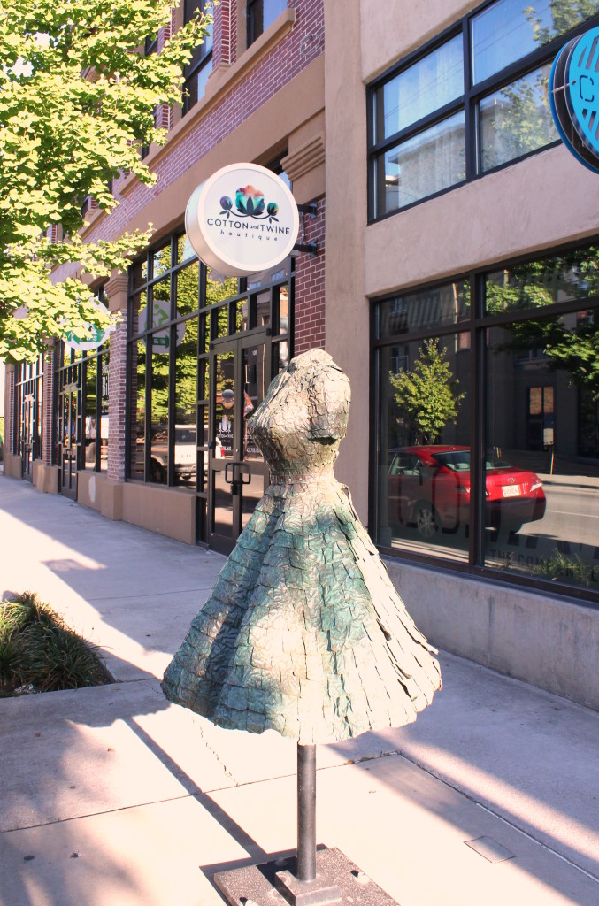

.png)
.PNG)
.PNG)
.PNG)
.PNG)
.PNG)
.JPG)
.JPG)
.PNG)
.PNG)


My husband and I made a trip to Chattanooga, Tennessee last October, and somehow I have missed writing a post on it! (I think Halloween, a party, Thanksgiving, and all things Christmas took over the blog posts during that time.) So today let’s take a look at just the restaurants we sampled on our visit. We were only there a few days for a conference, but we tried to cram in as much food as we possibly could. 🙂
On our first morning we headed to a restaurant that had received super high ratings for their breakfast, Bluegrass Grill. It was located right on Main Street, and it appeared that a good bit of development was being done in the area. This unusual statue was not far from the restaurant.
And look at this very creative fence and gate in a nearby parking area.
Here is the entrance to the restaurant.

Inside, there was a huge mural of the Blue Ridge Mountains,
(and Bluegrass music was playing over the speakers.)
The place was super busy, but we were seated at a small table very quickly. Others who came in after us had quite a wait. (And this was the middle of the week..not a leisurely Saturday morning.)
The menu offered any kind of omelet that you could possibly think of!
My sweet tooth called for French toast and the bowl of fresh strawberries and bananas,
but my husband had a Denver omelet and their highly recommended grits.
I really liked Bluegrass Grill. The food was delicious, the service great, and the atmosphere was wonderful. The little place is tight on space, so you are seated pretty close to other customers. Next to us was a group of 3 people…probably in their late twenties to early thirties. They were talking about mission work they had been doing. (Yes, I was listening in on their conversation. 🙁 ) When it came time to pay their bill, the waitress came over and told them, “The customers that just left paid for your bill.” One of the guys at the table then said, “Wow! God can bless me like this every day if He wants to!” 🙂 How cute was that?!
Lunch that day was at our hotel, the Marriott, but for dinner that night I was excited we were going to Public House restaurant. There are many good restaurants from which to choose in Chattanooga, and this one was among the best.
Public House is located in Warehouse Row (which I will share with you in the next post 🙂 ) and the interiors were done by cke interior design. The space was very peaceful with board and batten walls, old wood floors, unique lighting, and a good mix of rustic, urban, and new.
Loved our French style linen napkins with the red stripes!
And now to the most important part…the food! The menu has very Southern dishes prepared with a fresh take on the ingredients.
I wanted to sample everything…especially all the appetizers! We decided on the deviled eggs with bacon brittle which were very good.
When we visit again, I want to try the appetizer plate that has grilled sourdough bread with pimento cheese and fried dill pickles. Yum!
After our appetizers, the waiter brought out this bowl of biscuits and corn muffins.
(Again, very good.)
Then our entrees arrived. I had ordered the fried chicken. On the menu it came with macaroni and cheese, but I am such a lover of beets and goat cheese that I had them substitute it for them. I would definitely order it all again. 🙂 You can see my husband’s order of shrimp and grits in the background of the photo. His dish was delicious as well.
Now for dessert. As much as I am a sweet lover, and as awesome as all of their desserts sounded, I just could not hold another bite. 🙁 (I should have ordered the carrot cake to go, and enjoyed it in the hotel with coffee.) There’s always next time… 🙂
The following evening we went back to Warehouse Row to give Tupelo Honey a try for dinner. They too offer Southern cuisine prepared with an innovative approach. The hanging window decor was unique.
You can purchase their jellies, salad dressings, and cookbooks in the restaurant.
My mother gave me a copy of their most recent cookbook.
Tupelo Honey Cafe: New Southern Flavors from the Blue Ridge Mountains
It has quite a few very unusual takes on Southern dishes – everything from at least 4 versions of pimento cheese to buttermilk cheesecake. Each chapter has a page or two of very interesting writing about life in the Blue Ridge mountains, and there are numerous gorgeous photos of the region. (I do wish they had included more food photography though.) The Tupelo Honey people also published another cookbook a few years before this one. I have not seen it, but I imagine it too has recipes for traditional Southern dishes prepared in unique ways.
Tupelo Honey Cafe: Spirited Recipes from Asheville’s New South Kitchen
Okay, now to our meal. 🙂
The first thing they bring out after taking your order is a bowl of biscuits with blueberry preserves. They were good, but I will say the bread at Public House was better.
I tried their fried chicken. (I was on a quest to determine where to find the best. 🙂 ) They serve it boneless, which is not quite what I want when I order fried chicken, but it was good. I also had their mac n’ cheese and sweet potato fries….
and my husband had a salmon dish with a salad and fries.
To me, the food was tasty, but the whole restaurant just felt like Cracker Barrel had tried to go upscale. I guess the fact that it is a chain restaurant may have had a bearing on those thoughts. Regardless, we enjoyed our dinner and our dessert of a shared banana pudding. 🙂
On our last day in Chattanooga, we stopped for lunch at Foodworks before making our way back home. (You should click on the link if for no other reason than to watch the background video of the restaurant interior on their homepage.) The restaurant is located in a beautifully renovated knitting mill.
They offered quite a selection for a lunchtime meal.
My husband had their burger…
and I had their incredibly delicious chicken picatta.
(Yes, there is chicken swimming in a lemon butter sauce under that large pile of mushrooms, tomatoes, basil leaves, and Parmesan!)
This time I knew to forego the appetizers and save room for dessert. 🙂
I am not a fan of bread puddings, (It’s a texture thing folks 🙁 ) but we ordered the coffee toffee one because it had Heath bars in it. The flavor was good, but like I said, I just don’t care for the texture of bread puddings. I think I would have liked the “Something Chocolate” dish more.
And with that, our meals in Chattanooga are history. Next time we are together, I want to show you where we shopped on our trip. If you are from Chattanooga, or if you have visited, and you know of great places to eat that we missed, (which I am sure there are a zillion in that foodie town!) please leave a comment with your recommendation. We would love to know for the next time we travel there!
Until next time…


.PNG)
Just getting here to the party! Oh my stars, I think I would love to do a food tour there! My mouth was watering the whole time I read.
I love Chicken Picatta, and make it maybe once a month…so easy. I use Ina Garten’s recipe. It isn’t topped like the one you had though, but that sounds easy to copy.
I gave up making fried chicken years ago. I hated cleaning up the splatters all over the kitchen. Tried it once about a year ago, and quickly remembered why I don’t make it! 😉 Now we just pick it up at the supermarket, and it’s delicious because I didn’t have to make it! I once got undercooked fried chicken at a restaurant years ago, so I shy away from it when dining out. Funny how things happen that affect you for years.
Thanks for the fall trip! Dang cold here tonight!
———————————————————————–
Yes, a food tour is definitely in order for there! Yum to your chicken dish. 🙂
Bad food experiences will certainly turn you off from dishes (and restaurants!)
VERY cold here as well! Stay warm.
Kelly
Tupelo Honey started here in Asheville, and is always good, but I tend to always get the same things. Their sweet potato pancakes are wonderful, and the recipe is in the first cookbook. My sweet husband often makes them for me on Sunday mornings, baking the sweet potato the night before.
———————————————————————–
That sounds delicious Carolyn, and your husband sounds like a sweetheart for making them for you!
Thank you for stopping by. 🙂
Kelly
Chattanooga is such a wonderful place! We so enjoy visiting there. Your food choices are delicious and now I am starving…LOL. It looks like you had a most wonderful trip! Thank you for sharing some new places for us to check out on our next visit!
————————————————————————
Yes it is Benita! I hope you have an opportunity to try out the restaurants on your next trip!
Kelly
Oh my, now I am hungry!! All of those restaurants sound and look delicious. We’ve only passed through Chattanooga, but I would love to visit. Now I know where to eat. 😉 Like you, I am not a fan of bread pudding. I want to like it but just don’t. Haha, I “had” to eat it at our Christmas party because one of our guests brought it. 😀 Bring on the shopping!! 😉
———————————————————————
Glad to know I am not alone on the texture issue with bread pudding! 🙁
Hope you get to experience all that Chattanooga has to offer one day Gina!
Kelly
Hey Kelly! This is my first time commenting. I love love love your blog. Your home is beautiful and you are an encouragement to me to pay attention to the little details in my home and in my entertaining.
I was born and raised in Chattanooga but moved away in 1984 as a young teenager. I still go back about once a year as I have family there. I have to tell you, when I was growing up there, you didn’t want to go downtown at night, well, even during the day unless you absolutely had to. I even checked out the zoo on my last visit, and I’d never been there as a child. I’m so proud of my hometown now!
I’d say the turnaround started around the time the Tennessee Aquarium was built. What was once an unsafe and depressed area has become vital again, which pleases me immensely. There’s something new to see with every visit. I look forward to seeing your upcoming posts about the shopping – my girls and I love to wander through the knitting mill and check out the antique booths.
———————————————————————-
I am so glad you jumped in to comment Chrissy! YES, Chattanooga has had a fabulous transformation!! You should be very proud of your hometown. 🙂 My husband and I both commented that it would be a good place to live, and we think our middle child would really love it.
Thank you for your compliments on the blog, and thank you for taking the time to leave a comment here. Happy Friday!
Kelly
That was fun! I loved it! As I was reading I thought…I bet Kelly would like Tupelo Honey! Next up, Tupelo Honey! The photo of your biscuit did not look as tasty as the one I had at another Tupelo Honey. Interesting that you pointed out the hanging doors because the hanging doors and hanging windows interested us too. I had the fried green tomatoes there. It is funny what we find on menus today…deviled eggs! My mom was before her time! The chicken piccata looked the best to me. Food Works would probably be my favotite. Thanks for sharing your trip with us!
———————————————————————
You know my tastes well Kathy! Ha! I do think we must have been twins in another life. 🙂 (I love fried green tomatoes and would have ordered them for an appetizer, but I wanted room for dessert that night.) That chicken dish at Foodworks was VERY good.
Have a great weekend!
Kelly
I looked up the full names of the restaurants!
Aretha Frankenstein’s
Julie Darling Donuts
——————————————————————–
Thanks for the names of your recommended restaurants. We will give them a try on our next trip!
Kelly
My daughter-in-law and I had a wonderful trip to Chattanooga 3 years ago. We were attending a women’s conference at Kay Arthur’s Precept Ministries and we came a few days early to enjoy the city. We had delicious shrimp and grits at Something Frankenstein’s (I forget the whole name) and treated ourselves the next morning to a mummy and creative donut at a place I can’t quite remember the name of, also! I’m a pretty lousy tour guide, but we loved Chattanooga and all the history and would love to go back some day. We live in Washington state, so it’s a major trip!
——————————————————————–
Yes, a trip back for you would be MAJOR for that distance! We hope to make a trek in the opposite direction this year to visit our son. I do hope you get to return to Chattanooga one day for another fun trip Lisa. 🙂
Kelly
Not surprised it took you more than a year to record your “doin’s” in 2015, because your year was packed about 3 times fuller than that of anyone else I can think of! Thanks for another terrific post and travelogue! You can add Travel Agent to the long list of fallback careers for which you are mightily qualified. 🙂
———————————————————————–
Too funny Ruth! It would be fun to be a travel agent, but I would really want to go on the trips that I plan for others!
Kelly
Hi Kelly…I LOVE eating and dining out is our favourite activity when travelling. The restaurants you tried all sound so good. The chicken piccata looks and sounds absolutely mouth watering. Must look up a recipe, never made it before. The lemon butter got my attention! I kow exactly what you mean about bread pudding, and like you, I would be tempted to try the coffee toffee version, it sounds divine, but the texture! The peanut butter cheesecake would be my choice 🙂
————————————————————————–
Those are good activities when traveling Tricia! I have had a lot of variations of the chicken picatta, but that one at Foodworks was one of the best. Glad to know I am not alone on the texture issue with bread pudding. 🙂 I would have loved that peanut butter cheesecake, but unfortunately I have developed a bad allergy to peanuts. 🙁
Kelly
Kelly,
Oh my gosh, this post has made me so hungry. It’s getting close to dinner time, I wish I had all of the ingredients to make that fried chicken (the first one). Honestly, all of it looked so delicious. I’ve never been to Tennessee, let alone Chattanooga. What fun.
xo,
Karen
——————————————————————–
Oh dear..sorry about that Karen! Yes, I wish I could make that fried chicken for dinner too. Every time I make fried chicken, all I make is a big mess! LOL You need to add Chattanooga to your Southern tour. 🙂
Kelly
Another good one! Truly enjoy the travels and seeing menus and food choices. Haven’t been to that city since I was a child on my first ever vacation at the age of 9! Went to see Rock City on our way to Silver Springs and Daytona Beach. I enjoyed it all so much — may be the reason why I am in FL near the sea today! 🙂
———————————————————————
Thank you Louvina. I went to Chattanooga as a child too…and Rock City too. I forgot we took our boys there as well when they were small. We have a photo here somewhere of them standing beside the Chattanooga Choo-Choo. 🙂 Yes, your love for Daytona Beach started your whole Florida thing!
Kelly
Tupelo honey and foodworks are definitely two of my favorite places in Chattanooga! I moved here two years ago and completely fell in love with the city. One of my favorite things about Chattanooga is the amazing food! It’s impossible to pick just one favorite. Another restaurant that I love is called Blue Orleans. It’s very traditional New Orleans Cajun food. AMAZING! Sometimes the service isn’t so great (under staffed) but the food is totally worth it. In walking distance from blue Orleans is where you will find the best hot chocolate you will ever have in your life at Hot Chocolatier. Tony’s is a great Italian restaurant as well. Give these a try next time you are in town!
———————————————————————-
I really liked Chattanooga when we were there for our short visit! I had not been there since I was a child. Your town does have some VERY good places for food. Thank you so much for the recommendations! My husband likes Cajun food, so I feel sure Blue Orleans is a place we will try on our next visit. And oh my at the hot chocolate!! I would love a cup of that right now! Love Italian too, so Tony’s sounds like a good place as well.
Thanks again Laura!
Kelly
Enjoyed your blog!!! Shrimp and grits is one of my favorites!! My daughter is getting married in May outside Chattanooga. Her Bridesmaid Luncheon is at Tupelo Honey Cafe and rehearsal dinner is at The Knitting Mill. You picked some good restaurants!!
———————————————————————-
Thanks so much for reading Keith! Tupelo Honey will be fun for the bridesmaid’s luncheon, and I know the rehearsal dinner at Foodworks at The Knitting Mill will be yummy. Perhaps they will serve shrimp and grits for the dinner! I think we just got lucky with our picks. 🙂
Kelly